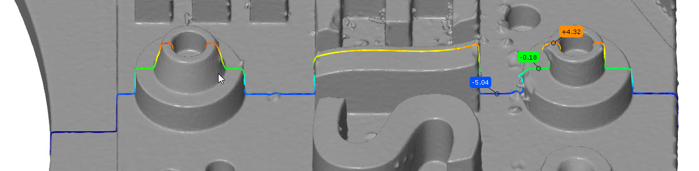
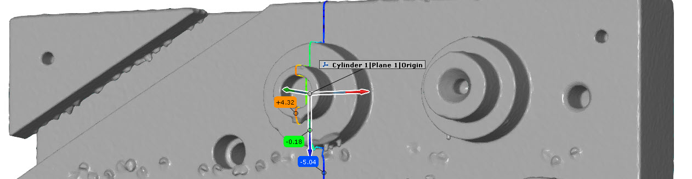

scripted_curve_check

Short description
This example demonstrates how to create a scalar curve check by a script. Also, the usage of custom coordinate systems in scripted checks is shown.
Highlights
First of all, we need to check if the element selected by the user by the DIALOG.slct_element widget is suitable for being checked with a curve check. You can implement your own filter for that, but you can also use the API convenience function for that purpose, which only allow “curve-like” elements:
DIALOG.slct_element.filter = gom.api.scripted_checks_util.is_curve_checkable
To allow calculation in a custom coordinate system (one that exists in the project), a second Selection element widget is inserted in the dialog, here named cs. In the dialog function, its value is saved to the element parameters. In case of no selected coordinate system, the viewing coordinate system is used.
def dialog (context, params):
# [...]
params['coordinate_system'] = DIALOG.cs.value
if params['coordinate_system'] is None:
params['coordinate_system'] = gom.app.project.view_csys
Having this reference to a coordinate system, we can use the API function scripted_checks_util.get_cs_transformation_4x4 to get a 4x4 matrix for computation.
During the computation for all stages, we then apply this (affine) transformation using the dot product.
def calculation (context, params):
# [...]
trafo_matrices = np.array (gom.api.scripted_checks_util.get_cs_transformation_4x4 (params["coordinate_system"]))
# [...]
# Apply coordinate transformation to all vertices if necessary
if trafo_matrices is not None:
stage_trafo = trafo_matrices[s]
stage_vertices = (np.dot(stage_trafo[0:3, 0:3], stage_vertices.T) + stage_trafo[:3,3:]).T
# The result of this stage to be filled
actual_result = np.zeros (stage_vertices.shape[0])
nominal_result = np.random.rand (stage_vertices.shape[0])
for i in range (stage_vertices.shape[0]):
point = gom.Vec3d (stage_vertices[i][0], stage_vertices[i][1], stage_vertices[i][2])
# ----------------------------------------------------
# --- insert your calculation for each vertex here ---
# ----------------------------------------------------
actual_result[i] = point.y
# ----------------------------------------------------
Finally, the result is to be set. For each point of the referenced curve, a nominal and actual value is needed. Therefore, the result takes the following form, where actual_result and nominal_result are vectors with the same length (number of curve points).
result = { "actual_values" : actual_result, "reference" : element, 'nominal_values': nominal_result }
In this case, the result is just the y coordinate of each point to easily see the correctness of the results including a given transformation.
Using the example project zeiss_part_test_project and the viewing coordinate system, you get the screenshot shown on top. However, if you select the coordinate system Cylinder 1|Plane 1|Origin, you can see the transformation in effect:
